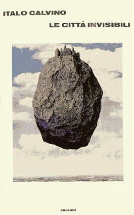

Italo Calvino nasce il
15 ottobre 1923 a Santiago de Las Vegas, Cuba, da genitori italiani. Il
padre, agronomo, è di Sanremo; sua madre, anche lei laureata in
scienze naturali, è sarda. Nel 1925 la famiglia ritorna in Italia,
a Sanremo, I genitori, liberi pensatori, non gli impartiscono nessuna
educazione religiosa. Dopo il liceo si iscrive alla Facoltà d’Agraria
dell’Università di Torino.
Nel ’43 partecipa alla
resistenza in Liguria, militando nella Brigata Garibaldi. Si iscrive al
Partito Comunista Italiano e nel ’47 si laurea in Lettere con una tesi
su Conrad. Nello stesso anno pubblica il suo primo romanzo Il
sentiero dei nidi di ragno, a cui seguirà nel 1952 Il visconte
dimezzato, primo romanzo della cosiddetta “trilogia degli antenati”, che
comprende anche Il barone rampante (1957) e Il cavaliere inesistente (1959).
La sua già copiosa produzione si arricchirà negli anni con
La giornata di uno scrutatore (1963), Le città invisibili (1972),
Il castello dei destini incrociati (1973), Se una notte d’inverno un viaggiatore
(1979) e, infine, Palomar (1983). Interessanti anche le traduzioni (fra
le quali I fiori blu di Raymond Queneau), e i volumi in cui sono raccolti
interventi critici e saggi.
Nel ’72 gli viene
conferito dall’Accademia dei Lincei il prestigioso premio “Feltrinelli”.
L’anno seguente aderisce alla “Cooperativa Italiana Scrittori”, che si
propone di contrastare la concentrazione delle case editrici nelle mani
di grossi industriali.
Dopo la sua morte, avvenuta
a Siena nel 1985, sono state pubblicate le Lezioni americane (postumo,
1988), che Calvino avrebbe dovuto tenere di lì a pochi mesi all’Università
di Harvard e Perché leggere i classici (postumo, 1991).
Il
sentiero dei nidi di ragno esce nell’immediato dopoguerra,
nel momento di schema ideologico e stilistico. Ma con “l’esplosione letteraria”
di quegli anni, come egli la definiva, Calvino conserva in comune solo
l’argomento, la Resistenza. Il tema però, a differenza di quanto
facevano i neorealisti, è affrontato da una visuale non oggettiva,
così come lo vedono e lo interpretano gli occhi del piccolo Pin,
con tutte le curiosità e tutti gli stupori propri dell’infanzia.
Per questo egli guarda alle vicende degli adulti, che gli restano almeno
in parte incomprensibili, con una disposizione avventurosa e fantastica
che gli permette di proiettarle in un’atmosfera quasi magica.
L’inclinazione fantastica,
costante di tutta l’opera di Calvino, rappresenta la corda più autentica
dello scrittore. In molte delle sue opere, infatti, egli infrange una regola
ferrea della vita (e di gran parte della letteratura) che vuole da una
parte la realtà, dall’altra la finzione, e mescola i due piani facendo
accadere cose straordinarie e spesso impossibili all’interno di un contesto
realistico, ma senza perdere colpi né sull’uno né sull’altro
versante. Infatti, sa mantenere sempre nei confronti della sua materia
un approccio leggero, trattenuto dall’umorismo, e smussa gli aspetti più
sconcertanti con un atteggiamento
di serena saggezza.
Questa vocazione fiabesca
si esprime in pieno nei Nostri antenati (titolo sotto cui è stata
pubblicata nel 1960 la “trilogia degli antenati”), i tre romanzi brevi
che si ispirano ad un genere letterario, il racconto filosofico, scarsamente
seguito in Italia ma fortunatissimo in tutta la narrativa europea; ad esso
rimandano il fermo senso morale, l’impegno educativo e la possibilità
di cogliere nell’intreccio una vasta gamma di allusioni alla contemporaneità
e di riflessioni sulla storia e sulla condizione umana. L’uomo descritto
nella trilogia, però, non è solo un pretesto per meditazioni
esistenziali troppo sagge e severe; al contrario lo scrittore lo ritrae
con estro e con una garbata malizia, sia egli diviso in un mondo fatto
di due verità (Il visconte dimezzato), o costretto a simulare l’evasione
da regole soffocanti nella natura e nell’avventura (Il barone rampante),
o infine ridotto ad apparenza e a pura finzione (Il cavaliere inesistente).
Il visconte dimezzato,
che si svolge nel XVII secolo, narra la strana storia del visconte Medardo
di Terralba, colpito e dimezzato da una cannonata durante una battaglia
contro i Turchi. Le due metà, tornate al paese, si danno l’una ad
opere malvagie, l’altra a riparare i torti compiuti dalla prima, ma ambedue,
prive come sono del senso della misura, finiscono col diventare insopportabili
per i loro eccessi, e solo ricongiungendosi potranno riacquistare l’equilibrio
proprio di ogni comune essere umano.
Il protagonista del Barone
rampante è il giovanissimo barone settecentesco Cosimo Piovasco
di Rondò, che per sottrarsi alle costrizioni di una famiglia troppo
severa decide di andare ad abitare sugli alberi, da dove continuerà
a partecipare alla vita, sfruttando l’insolita prospettiva per “guardare
le cose dall’alto”.
Nel Cavaliere inesistente,
infine, Agilulfo – paladino di Carlo Magno – si manifesta solo attraverso
la sua armatura; senza di essa non esiste, ma dentro di essa si muove,
parla e combatte coraggiosamente per la “santa causa”. Finirà in
pezzi, lasciando l’armatura ad un nobile e focoso giovanetto, Rambaldo.
Il significato simbolico
che trasforma queste straordinarie avventure della fantasia in una continua
allegoria della condizione dell’uomo, e in particolare dell’uomo contemporaneo,
è indicato dallo stesso autore nella Prefazione alla trilogia. Egli
dichiara di aver inteso rappresentare, attraverso le vicende dei suoi personaggi,
tre gradi di “approccio alla libertà”, tre momenti per realizzarsi
integralmente come esseri umani. Così, se nel Visconte dimezzato
l’individuo mutilo e alienato cerca di recuperare il suo equilibrio tornando
ad essere un “impasto di vizi e di virtù”, nel Barone rampante il
motivo dell’alienazione viene trasposto nell’epoca che più d’ogni
altra sembra aver realizzato la fusione fra uomo e natura, il Settecento,
il “secolo dei lumi”. Il protagonista, che abbandona il consorzio umano,
non per questo rinuncia alla vita e all’amore e tanto meno alle sue convinzioni
ideologiche (rimarrà sempre un intellettuale progressista, di orientamento
illuministico), intervenendo sovente in posizione critica, nei principali
avvenimenti del tempo. Nel Cavaliere inesistente, infine, il tema si concretizza
in un personaggio che vive solo in quanto “forma” e la cui personalità
si annulla fino a identificarsi nella funzione sociale che il suo ruolo
gli assegna e nei gesti meccanici e prevedibili che compie.
Lo stile
limpido ed arioso, che evita i toni troppo alti, conserva un’agilità
e una leggerezza che ricordano l’atmosfera delle favole dell’Ariosto, un
autore molto amato da Calvino, al quale egli guarda sempre come ad un modello
di quell’equilibrio tematico e stilistico fra ragione e fantasia a cui
egli stesso aspira.
Anche nei racconti, inaugurati
da Ultimo viene il corvo (1949), in cui è ripreso il tema della
Resistenza (ma più celebri sono le estrose avventure di Marcovaldo
ovvero le stagioni in città, del 1963), Calvino dà prova
di apertura ai problemi dell’attualità, di attenzione per fatti
e avvenimenti tipici del mondo contemporaneo, e di uno spiccato interesse
sociologico, che si manifestano senza intaccare la consueta armonia fra
un rigoroso impegno intellettuale e il gusto fantastico, confermata del
resto anche nella preziosa raccolta di Fiabe italiane che lo scrittore
curò nel 1956.
Una linea di continuità
con le opere precedenti si ritrova nel romanzo La giornata di uno scrutatore
(1963), che trae spunto dall’inconsueta esperienza di uno scrutatore elettorale
posto a contatto diretto con il dramma della malattia e della deformità
in un seggio all’interno di un istituto per minorati fisici e mentali (il
tristemente famoso “Cottolengo” di Torino) per sollevare inquietanti interrogativi
sul significato e sul valore dell’esistenza.
L’approfondimento degli
studi compiuto da Calvino durante la sua permanenza a Parigi sulla natura
della narrativa e sulle possibilità di organizzare il racconto su
molteplici piani, correlati e interagenti fra loro, prende forma letteraria
concreta nelle Cosmicomiche e in Ti con zero.
Le cosmicomiche (1965)
traducono l’impegno di conoscenza razionale dell’autore nelle strutture
di un genere letterario relativamente recente, la fantascienza, al cui
interno egli si muove con grande eleganza, cimentandosi con una gamma di
argomenti che vanno dall’astronomia alla microbiologia alla cibernetica.
I diversi contesti sono legati dalla costante presenza del protagonista
Qfwfq (il nome, palindromo – cioè che si può leggere da sinistra
a destra e viceversa –, è da pronunciarsi “cueffe-vu-effecu”), un
personaggio indefinibile, forse uomo e forse no, la lunghezza della cui
vita coincide con quella dell’universo. Egli sostiene di essere stato testimone
della genesi e dell’evoluzione del cosmo in miliardi di anni, e su di esse
riferisce una miriade di ipotesi contraddittorie e talvolta addirittura
opposte. Con la figura di Qfwfq, Calvino ipotizza l’esistenza di un mondo
che rovescia i comuni criteri di interpretazione della realtà, un
mondo assurdo, in cui l’identità non è più definibile
secondo criteri e punti di riferimento “umani”.
Lo stesso personaggio
ricompare anche in alcuni racconti di Ti con zero (1967), dove però
i temi dominanti diventano la genetica e la fisica quantistica.
Lo stile,
che nelle Cosmicomiche è sospeso come di consueto fra precisione
razionale e umorismo, e suggerisce perfettamente il senso di ammirato stupore
di chi assiste allo straordinario miracolo dell’evoluzione della vita dell’universo,
in Ti con zero si cristallizza e si adegua ai procedimenti logici della
scienza e delle dimostrazioni matematiche.
Le città invisibili
(1972) ripropone la riflessione sulla realtà contemporanea, proiettata
però su uno sfondo lontano nel tempo e nello spazio: l’epoca di
Marco Polo nell’impero del Gran Khan. La cornice, esilissima, è
costituita dalla lunga serie di resoconti – cinquantacinque in tutto –
che Marco Polo, ambasciatore del Gran Khan, fa sullo stato delle città
cinesi, disseminate su un territorio sterminato e invisibili all’imperatore,
che non può e non vuole visitarle. Il viaggiatore descrive scenari
strani e favolosi, città suggestive e straordinarie, con cupole
d’argento e vie lastricate di stagno, dove vivono uomini e donne dall’aspetto
e dai costumi esotici, ma con le debolezze e i difetti presenti ovunque;
anche in quel mondo bizzarro e misterioso è facile leggere la concezione
negativa che Calvino ha del mondo attuale, con la continua allusione all’inferno
delle metropoli, agglomerati mostruosi e invivibili, vere prigioni dello
spirito, frutto aberrante della civiltà tecnologica.
Con Il castello dei destini
incrociati (1973), Calvino torna ad un complesso intreccio fantastico;
ne sono protagonisti alcuni viaggiatori che s’incontrano per la prima volta
in un castello-ospizio. Vittime di un incantesimo che li ha resi muti,
essi vogliono raccontare a tutti i costi le loro storie, e per farlo si
servono di un mazzo di tarocchi, allineandone su un tavolo le carte, che,
disposte in forma geometrica, forniscono di volta in volta informazioni
diverse. Così, le vicende dei personaggi sono ricostruite attraverso
le successive combinazioni, che subito vengono scomposte e poi ricomposte
secondo un altro ordine, e in modo sempre imprevedibile e aleatorio. Attraverso
il gioco degli intrecci, l’autore spiega il funzionamento dei meccanismi
della comunicazione, costituiti da infinite combinazioni di segni, e sottolinea
la loro casualità, ma anche l’esigenza irrinunciabile che ogni uomo
ha di comunicare con gli altri, usando ogni possibile strumento a sua disposizione
(in questo caso, le carte).
Ancora più raffinato
e complesso appare il gioco intellettuale e letterario del romanzo Se una
notte d’inverno un viaggiatore (1979).
Un ipotetico Lettore,
che ha comprato un libro di Calvino, vi trova gli inizi di dieci romanzi,
che vanno dal genere realistico al poliziesco, dall’erotico al sentimentale
e all’esotico, ma non può completare la lettura di nessuno di essi
perché il volume è male impaginato. Dal libraio, dove è
andato a protestare, il Lettore incontra la Lettrice, che si è trovata
di fronte allo stesso problema; i due intraprendono una discussione sulle
rispettive preferenze letterarie, che li porterà all’amore e quindi
al matrimonio.
Il romanzo gioca su una
rigorosa struttura geometrica, basata sull’intreccio fra vari elementi:
il primo è il rapporto fra il libro e il Lettore, poiché
l’inesistenza del testo è la causa dell’ingresso del Lettore stesso
nella vicenda come protagonista. A ciò si aggiunge il rapporto fra
l’autore e il lettore vero, che Calvino coinvolge direttamente spiegandogli
la sua idea di partenza (scrivere un libro fatto di soli inizi) e al quale
chiarisce la funzione che egli assegna alla letteratura, intesa come strumento
che serve a descrivere la realtà concreta ma anche ad indagarne
gli aspetti più misteriosi e sfuggenti.
L’ultima opera di Calvino
è composta dai ventisette racconti di Palomar (1983). Essi sono
distribuiti sulla base del numero perfetto, il tre (ventisette è
dato infatti da tre alla terza) e disposti a gruppi di tre, ciascuno con
un proprio titolo. I gruppi di testi, suddivisi a loro volta di tre in
tre, vanno a formare tre sezioni più ampie. In tal modo, ogni racconto
può essere letto da solo, ma fa anche parte di una struttura organica
e compatta.
L’ambiguo titolo (che
in spagnolo significa “colombaia”) indica il nome del protagonista, ma
è anche lo stesso del monte della California dove ha sede un importante
osservatorio astronomico e uno dei più grandi telescopi del mondo.
Calvino affermava poi che Palomar gli faceva venire in mente “un palombaro”,
un personaggio “che s’immerge nella superficie”, e di Palomar egli ebbe
a dire che “Questo è il libro più autobiografico che io abbia
scritto, un’autobiografia in terza persona: ogni esperienza di Palomar
è una mia esperienza”.
Palomar è solitario
e taciturno, ma sempre attento a osservare ciò che gli capita sotto
gli occhi e a trarne spunto per riflettere e per fare ipotesi su temi essenziali
come la condizione dell’uomo nella storia, il senso della sua esistenza
e della sua fine, l’angoscia della vita e il terrore della morte. Ma le
sue deduzioni e conclusioni sono spesso diverse e contrastanti, e lo lasciano
ogni volta più perplesso e insicuro di prima.
I saggi critici (fra
i più celebri, quelli su Ludovico Ariosto, Eugenio Montale e Raymond
Queneau) costituiscono un’ulteriore conferma della incisiva presenza di
Calvino nella cultura contemporanea. I suoi interventi sulla letteratura
sono sempre puntuali e vivaci, le pagine dedicate a scrittori italiani
e stranieri del passato e del presente sono attente, appassionate e di
gradevolissima lettura.
Non si può trascurare,
infine, in un ambito che solo impropriamente si può definire critico,
la splendida edizione delle Fiabe italiane (1956) in cui lo scrittore,
con un lavoro paziente e qualificato, raccolse e trascrisse in lingua italiana
molte fiabe appartenenti alla più antica tradizione dialettale delle
singole regioni.
“Eleganza”, “leggerezza”, “misura”, “chiarezza”, “razionalità” sono i concetti a cui più usualmente si fa ricorso per definire l’opera di Calvino; in effetti, essi individuano aspetti reali della personalità dello scrittore, ma, al tempo stesso, rischiano di sottovalutarne altri, ugualmente presenti e decisivi. Accanto infatti a un gusto illuministico per l’ordine e la chiarezza, accanto al rifiuto programmatico di